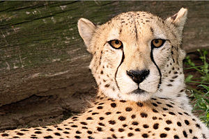

| Nome cientifico | Habtat | Família | Tamanho | Foto |
|---|---|---|---|---|
| Acinonyx jubatus | Tem como habitat a savana, vive na África, península Arábica e no sudoeste da Ásia. | Felidae | Um animal adulto pode pesar entre 28 e 65 kg. O comprimento total do corpo varia de 112 a 150 cm |  |
O seu pelo é amarelado, salpicado de pontos negros arredondados, e na face existem duas linhas negras, de cada lado do focinho, que descem dos olhos até à boca, formando de fato um trajeto de lágrimas. Sua função acredita-se ser para proteger do brilho sol, já que caçam durante a claridade do dia O comprimento da cauda, usada para equilibrar o corpo do animal durante a corrida, pode variar entre 66 e 84 cm Os guepardos sempre foram famosas por sua velocidade, mas a velocidade máxima alcançada ainda é controversa. Em distâncias de até 500m ela é grandemente considerada entre 96 e 104 km/h. O guepardo não forma bandos para caçar como os leões, mas os machos se juntam às vezes para caçar em pequenos grupos, especialmente se nasceram na mesma ninhada, casais também podem usualmente caçar juntos.